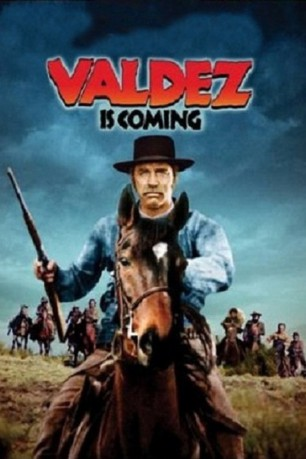

#2349 Valdez
Alternativ: Valdez Is Coming
 
 IMDB-Wertung: 6.9 / 10
IMDB-Wertung: 6.9 / 10  Metascore: 0
Metascore: 0 
Rancher Tanner (Jon Cypher) hält einen Schwarzen für den Mörder eines Freundes. Er lässt diesen durch den mexikanischen Hilfssheriff Valdez (Burt Lancaster) töten. Für die Witwe des Getöteten, eine Apachin, erbittet Valdez finanzielle Unterstützung, wird aber nur ausgelacht. Valdez sinnt auf Rache. - Interessanter Spätwestern über den Zusammenprall von Kulturen und den Umgang mit Minderheiten.
Jahr: 1971
Dauer: 90 Minuten
FSK: 16
Land: USA Studio: United Artists An MGM CompanyTonspuren: DD2.0 - ,
Untertitel:
Auflösung: 1080p (1920x1040) Größe: 5601 MB
Genre: Western
Regisseur: Edwin Sherin
Drehbuch: Roland Kibbee, David Rayfiel, Elmore Leonard
Soundtrack: Charles Gross
Darsteller:
 Burt Lancaster als Valdez
Burt Lancaster als Valdez- Susan Clark als Gay Erin
 Frank Silvera als Diego
Frank Silvera als Diego- Jon Cypher als Frank Tanner
 Richard Jordan als R.L. Davis
Richard Jordan als R.L. Davis Hector Elizondo als Mexican Rider
Hector Elizondo als Mexican Rider Barton Heyman als El Segundo
Barton Heyman als El Segundo Phil Brown als Malson
Phil Brown als Malson Ralph Brown als Beaudry
Ralph Brown als Beaudry- Werner Hasselmann als Sheriff
- Lex Monson als Rincon
- Sylvia Poggioli als Segundo's Girl
- José García García als Carlos
- María Montez als Anita
- Juanita Penaloza als Indian Woman
- Marta Tuch als Rosa
 Juan Fernández als Mexican Buyer
Juan Fernández als Mexican Buyer- Rudy Ugland als First Tracker
- Tony Epper als Bodyguard
- Vic Albert als Townsman
- Per Barclay als Townsman
- Allen Russell als Townsman
- James Lemp als Point Rider
- Raoul Castro als Young Mexican
- Mario Barros als Gang Member , uncredited
 Nick Cravat als Gang Member , uncredited
Nick Cravat als Gang Member , uncredited- Santiago García als Gang Member , uncredited
- Roberta Haynes als Polly , uncredited
- Michael Hinn als Merchant , uncredited
- Concha Hombria als Inez , uncredited
- Lisardo Iglesias als Rider , uncredited
- Jefferson Kibbee als Gang Member , uncredited
- Lincoln Kibbee als Gang Member , uncredited
- Losada als Tracker , uncredited
- Ian Maclean als Gang Member , uncredited
- Tom McFadden als Gang Member , uncredited
- José Morales als Gang Member , uncredited
- Joaquín Parra als Tracker , uncredited
- Santiago Santos als Rider , uncredited
- Mario Sanz als Gang Member , uncredited
- Lee Thaxton als Gang Member , uncredited
- Robin Thaxton als Gang Member , uncredited
- Julian Vidrie als Gang Member , uncredited
- Manolin Vidrie als Gang Member , uncredited
Datei: X:\HD-Western-1960-1979\Valdez (1971, FSK16, 1920x1040).mkv seit 02.11.2015
Festplatte: HD Eastern+Western
 Es gibt insgesamt 110 Filme in der Gruppe 'HD-Western-1960-1979'
Es gibt insgesamt 110 Filme in der Gruppe 'HD-Western-1960-1979'